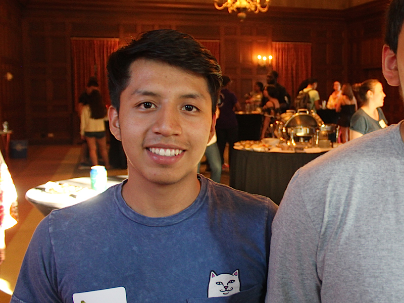

Bryam Barbecho

Bio
I am a Senior from Brooklyn, New York.
Contact Info (email)
bbarbech@bowdoin.edu
Major
Psychology
Relevant Courses Taken
Intro to Psychology
Cognitive Psychology
Research Design
Infant and Child Development
Educational Psychology
Data Analysis
Lab in Cognitive Psychology
Abnormal Psychology
Intelligent Minds and Machines
Other Interests
I enjoy cooking.
- Guacamole is my specialty!
I learned how to bake a cheesecake during the pandemic (edible only after 5 tries!).
I play soccer here and there.
I like discovering new restaurant/snack spots throught the city with friends.